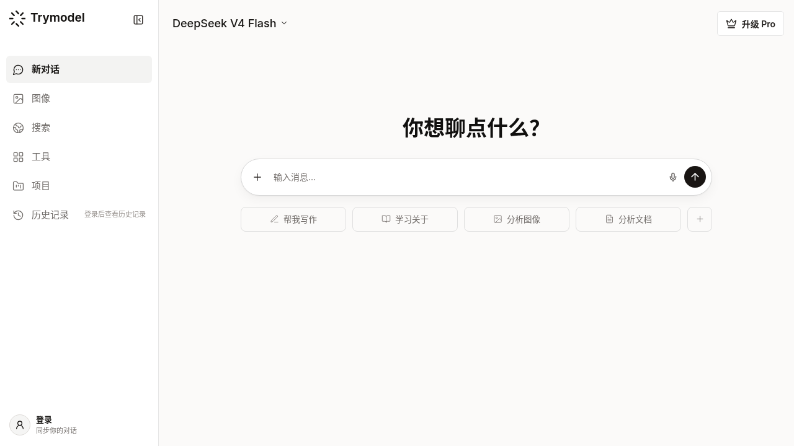

Trymodel 上新：Claude Fable 5.1 / Opus·Sonnet·Haiku 5.5、DeepSeek V4.1 Flash、Grok 4.7 怎么选怎么用




最近 Trymodel 把模型广场里的 Claude、DeepSeek、Grok 按官方最新线梳理了一遍：展示名对齐、排序把新款顶到前面，并单独挂出 Claude Fable 5.1。一个站里就能切换多家前沿模型聊天，不用到处开会员、换网页。
本文介绍这次上了哪些新模型、各自适合干什么，以及在 Trymodel 里怎么快速上手。
这次上新了什么
Claude（Anthropic）
当前推荐优先看这四档（新 → 旧）：
| 展示名 | 大致定位 | 适合场景 |
|---|---|---|
| Claude Fable 5.1 | 最重推理、长链路 Agent | 难题目、长跑 coding / 研究、对 Opus 5.5 仍不够时 |
| Claude Opus 5.5 | 主力 Agent 编码与知识工作 | 日常复杂开发、改仓库、写长文档 |
| Claude Sonnet 5.5 | 速度与智能的平衡 | 日常问答、改代码、写文案 |
| Claude Haiku 5.5 | 最快最省的小模型 | 分类、抽取、高频短对话 |
线上也还保留 Fable 5、Sonnet 5、Haiku 4.5、Opus 4.x 等旧款，方便对照或兼容旧提示词。
DeepSeek
| 展示名 | 说明 |
|---|---|
| DeepSeek V4.1 Flash | 目前主推的新架构小旗舰：更快、更省，原生多模态能力更强，官方也在把流量往这条线收 |
| DeepSeek V4 Pro | 仍可用的上一代 Pro，重推理时可对比试试 |
| DeepSeek V4 Flash | 免费 / 试用友好的一条线（站点默认会落到这条），适合先随便聊 |
Grok（xAI）
| 展示名 | 说明 |
|---|---|
| Grok 4.7 | 当前官方旗舰：编码与知识工作更稳，长任务更愿意把事做完 |
| Grok 4.6 / 4.5 / 4 | 保留对照；Grok 4.8 尚未正式上线，这次没有硬塞假型号 |
下拉里现在按 4.7 → 4.6 → 4.5 → 4 排，打开就能先看到最新款。
怎么在 Trymodel 里用
- 打开 https://trymodel.chat/
- 点输入框上方的 模型选择（例如当前显示的 Gemini / DeepSeek 等名字）
- 在搜索框输入
Claude、DeepSeek或Grok - 选中例如 Claude Fable 5.1、Claude Sonnet 5.5、DeepSeek V4.1 Flash、Grok 4.7
- 直接发问题或贴代码；需要联网检索时，支持联网的模型会按站点能力走搜索工具
小提示：
- 若刚更新后列表还是旧的，硬刷新页面（或清一下浏览器里
trymodel-model-catalog缓存）再开下拉。 - 部分高阶型号（如 Fable 5.1、Opus 5.5、Grok 4.7）可能需要登录 / Pro，免费档仍可用 Haiku、部分 Flash 等先体验。
- 想固定默认模型：在账号设置里选好默认，再开新对话即可。
怎么选：一句话对照
- 要最强推理 / 长 Agent：Claude Fable 5.1，其次 Claude Opus 5.5
- 要又快又稳的日常编码：Claude Sonnet 5.5 或 Grok 4.7
- 要便宜高频：Claude Haiku 5.5 或 DeepSeek V4.1 Flash / V4 Flash
- 要国产开源向、性价比：优先 DeepSeek V4.1 Flash，难任务再对比 V4 Pro
同一道题丢给两三个模型并排试，往往比纠结「哪个绝对最强」更管用——这也是 Trymodel 把多家模型放在一个聊天框里的意义。
写在最后
模型迭代很快，Trymodel 这边会持续把 展示名、排序和上游 ID 对齐官方最新线，避免列表里还停在半代旧名。欢迎打开 trymodel.chat 搜一下 Fable、Sonnet 5.5、V4.1、Grok 4.7，亲手试一轮。
有想看的对比（例如 Fable 5.1 vs Opus 5.5 写同一段重构、Grok 4.7 vs Sonnet 5.5 刷题）可以留言，我按场景再补一篇实测。